측량및지형공간정보기사 (2011-06-12 기출문제)
1과목: 측지학 및 위성측위시스템
1. 전송파(carrier)에 대한 미지의 수로서, 위성과 수신기 안테나 간 온전한 파장의 전체 개수를 무엇이라 하는가?
- 모호정수
- AS
- 다중경로
- 삼중차
(정답률: 80%)

2. GPS를 이용하여 위치를 결정하는 경우에 대한 설명으로 틀린 것은?
- 반송파를 이용한 위치결정이 코드를 이용한 경우보다 정확하다.
- 단독측위보다 상대측위가 정확하다.
- 위성의 대수가 많은 것이 정확하다.
- 위성의 고도각이 낮을수록 정확하다.
(정답률: 62%)
3. 우리나라의 지형도에서 사용하고 있는 평면좌표는 어느 투영법에 의하는가?
- 등각투영
- 등적투영
- 등거투영
- 복합투영
(정답률: 90%)
4. GPS에 의한 기준점측량 작업 시의 기선해석에 대한 설명으로 옳지 않은 것은?
- GPS위성의 궤도요소는 정밀력 또는 방송력에 의한다.
- 기선해석의 방법은 세션(session)마다 단일 기선해석에 의한다.
- 사이클 슬립(cycle slip)의 편집은 원칙적으로 기선해석프로그램에 의하여 자동편집이나, 수동편집을 할 수도 있다.
- 기선해석의 결과는 FLOAT해에 의한다.
(정답률: 79%)
5. 기종이 서로 다른 GPS 수신기를 혼합하여 관측하였을 경우 수집된 GPS 데이터의 기선 해석이 용이하도록고안된 세계 표준의 GPS데이터의 자료형식은?
- RINEX
- DXF
- DWG
- RTCM
(정답률: 86%)
6. 구면삼각형 ABC의 세 내각이 다음과 같을 때 면적은? (단, 지구반경은 6370Km 이다.)
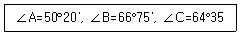
- 1,222,663km2
- 1,362,788km2
- 1,433,456km2
- 1,534,433km2
(정답률: 79%)
7. GPS 오차요인 중 위성전파가 장해물로 인해 차단되는 이유 등으로 위상측정이 중단되어 발생하는 오차는 무엇인가?
- SA(Selective availability)
- AS(Anti-spoofing)
- 사이클 슬립(Cycle slip)
- 멀티패스(Multipath)
(정답률: 85%)
8. 중력관측점과 지오이드면 사이의 질량을 고려한 중력이상은?
- 고도이상
- 부게이상
- 프리에어이상
- 위도이상
(정답률: 85%)
9. 적도 반경이 1m인 지구의 단면도를 그린다면 극 반경은 몇 cm 짧게 그리면 되는가? (단, 지구의 편평율은 1/299로 한다.)
- 0.33cm
- 0.44cm
- 0.55cm
- 0.66cm
(정답률: 72%)
10. 지구 자기의 북반구에서는 북극으로 갈수록 자침의 남극쪽을 무겁게 하거나 길게 하는데 그 이유로 가장 알맞은 것은?
- 북으로 갈수록 편각이 커지므로
- 북으로 갈수록 복각이 커지므로
- 북으로 갈수록 복각이 작아지므로
- 북으로 갈수록 편각이 작아지므로
(정답률: 55%)
11. 우리나라의 평면직각좌표계에 대한 설명으로 옳은 것은?
- 측량의 정확도를 1:10000까지 허용한다면 우리나라 전역을 평면으로 간주하여도 무방하다.
- 좌표원점의 축척계수는 0.9998이다.
- 음수표시를 피하기 위하여 가좌표계로서 '종(X)축에 20000m, 횡(Y)축에 50000m를 사용하고 있다.
- 3개의 평면직각 좌표계로 되어 있으며, 투영의 경계는 동ㆍ서 방향으로 각각 2° 이다.
(정답률: 59%)
12. GPS 측량에 과한 설명으로 틀린 것은?
- 인공위성의 전파를 수신해서 위치를 결정하는 시스템이다.
- 수신점의 위치를 계산할 때는 인공위성의 궤도 정보가 필요하다.
- 두 점 이상의 점을 동시에 관측할 경우, 측점간에 시통(視通)이 안 되면 위치 결정을 할 수 없다.
- 관측 시 상공의 시계를 확보할 필요가 있다.
(정답률: 78%)
13. 다음 중 국가기본도에서 쓰이는 좌표값이 아닌 것은?
- 경도
- 위도
- 평균해수면으로부터의 고도
- 타원체면으로부터의 고도
(정답률: 50%)
14. 지구의 질량을 계산하려면 지구의 반지름, 중력가 속도 외에 또 무엇을 알아야 하는가? ( 단, 지구는 자전하지 않는 완전구체로 간주한다.)
- 지구의 부피
- 지구 원심력의 크기
- 만유인력의 상수
- 지구 자전 각속도
(정답률: 92%)
15. 석유탐사의 주요 방법으로 일반적으로 지표면으로부터 깊은 곳의 탐사에 적합한 탄성파 측정방법은?
- 굴절법
- 반사법
- 굴착법
- 충격법
(정답률: 88%)
16. GPS 위성시스템이 우주부분에 대한 설명으로 틀린 것은?
- GPS 위성의 궤도면 수는6개이다.
- 각 궤도면의 경사각은 적도에 대해 55°경사로 배치되어 있다.
- GPS위성은 하루에 약1번씩 지구 주위를 회전하고 있다.
- 각 궤도 간 경사각은 60°이다.
(정답률: 77%)
17. 지도제작의 기준이 되는 기하학적인 지구의 형상은?
- 물리적 지구표면
- 지구타원체
- 지오이드
- 구체
(정답률: 48%)
18. 측지원점(Geodetic Datum)을 결정하기 위한 매개변수가 아닌 것은?
- 원점에서의 지오이드고
- 원점으로부터 최초 삼각측량의 기선에 이르는 방위각
- 원점에서 중앙 자오선의 연직선 편차
- 원점의 표준 중력
(정답률: 66%)
19. GPS 위성신호에 대한 설명으로 옳지 않은 것은?
- 위성신호가 전리층을 통과할 때 위상(carrier)은 광속보다 빨리 진행된다.
- 위성신호가 전리층을 통과할 때 코드(code)는 광속보다 느리게 진행된다.
- 위성신호가 대류층을 통과할 때 코드(code)는 광속보다 느리게 진행된다.
- 위성신호가 대류층을 통과할 때 위상(carrier)은 광속보다 빨리 진행된다.
(정답률: 70%)
20. 다음 중 반송파(carrier)의 모호정수(ambiguity)가 포함되어 있지 않는 관측치는?
- 일중위상차
- 이중위상차
- 삼중위상차
- 무차분 위상
(정답률: 85%)
2과목: 응용측량
21. 단곡선에 있어서 교각(I)=60°, 반지름(R)=100m, 곡선시점(B,C)의 추가거리가 120.85m일 때 곡선종점(E,C)까지의 거리는 얼마인가?
- 120.3m
- 186.6m
- 225.6m
- 250.6m
(정답률: 74%)
22. 그림과 같은 삼각형의 토지 ABC를 B점에서
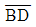
의의 넓이로 분할하고자 한다.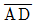
의 길이를 구하는 식으로 옳은 것은? (단, M : ABC의 면적, m : ABD의 면적)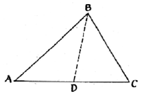
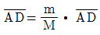
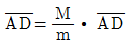
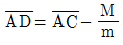
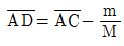
(정답률: 70%)
23. 그림과 같은 단면을 갖는 길이 50m인 제방의 체적은?
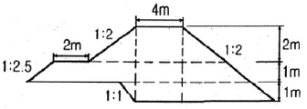
- 1818.5m3
- 2015.5m3
- 2187.5m3
- 2212.5m3
(정답률: 52%)
24. 하전의 유량조사를 위한 수위관측소의 위치 선정시 고려사항에 대한 설명으로 틀린 것은?
- 유로 및 하상 변동이 적은 곳이어야 한다.
- 흐름과 유속의 변화가 뚜렷이 나타나야 한다.
- 홍수 등에 의한 유실, 이동 및 파손의 위험이 없어야 한다.
- 교각이나 기타 구조물에 의하여 수위에 영향을 받지 않아야 한다.
(정답률: 84%)
25. 클로소이드 곡선에 대한 설명으로 틀린 것은?
- 철도와 같은 궤도두간에 주로 적용되는 완화곡선의 일종이다.
- 매개변수(A)의 크기는 클로소이드의 확대율을 의미한다.
- 클로소이드의 특성점이란 곡선반지름, 곡선장, 매개변수의 크기가 같은 지점을 의미한다.
- 곡률이 곡선의 길이에 비례한다.
(정답률: 38%)
26. 하천 측량에서 그림과 같이 깊이에 따른 유속(m/sec)을 얻었을 때, 3점법에 의한 평균유속은?
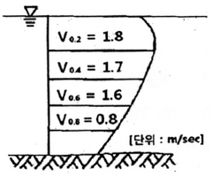
- 1.50m/sec
- 1.45m/sec
- 1.40m/sec
- 1.33m/sec
(정답률: 82%)
27. 다음 중 터널측량 작업순서로 옳은 것은?
- 예측→지표설치→답사→지하설치
- 답사→예측→지표설치→지하설치
- 예측→답사→지하설치→지표설치
- 답사→지표설치→예측→지하설치
(정답률: 77%)
28. 터널완성 후의 변형조사측량 중 고저측량에 대한 설명으로 틀린 것은?
- 철도의 경우는 시공기면을 기준으로 한다.
- 수로 터널과 같이 인버트(invert)가 있는 경우는 인버트의 상단을 기준으로 한다.
- 도로 터널에서는 arch crown을 기준으로 한다.
- 일반적으로 중심점의 높이는 중심선측량과 같이 20m 간격으로 관측한다.
(정답률: 55%)
29. 터널측량을 지상측량과 비교했을 때의 특징적인 내용이 아닌 것은?
- 망원경의 십자선은 조명 장치 등으로 구분이 용이 하여야 한다.
- 측점은 천정에 설치하기도 한다.
- 터널 내의 곡선 설치는 장소가 협소하므로 편각법을 주로 사용한다.
- 터널 내는 좁고, 어두우며, 급경사인 경우가 많으므로 특별한 기계장치의 조합이 필요하다.
(정답률: 73%)
30. 그림과 같은 유토곡선에 대한 설명으로 옳은 것은?
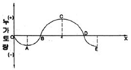
- 상향부분 A~C 구간은 성토구간을 나타낸다.
- 기선 OX상의 B, D에서는 토량의 이동이 없다.
- C점은 성토에서 절토로 변하는 점이다.
- 이 곡선은 결과적으로 토량이 남는다는 것을 의미한다.
(정답률: 84%)
31. 측량결과에 의하여 그림과 같이 절토고를 얻었다면 절토량은 얼마인가? (단, 각 분할된 구역은 가로 x 세로 = 20m x 10m로 동일하다.)
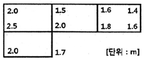
- 1,375m3
- 1,425m3
- 1,475m3
- 1,525m3
(정답률: 65%)
32. 경관측량에서 지점경관의 구성요소가 아닌 것은?
- 시점(視點)
- 종점(終點)
- 주대상(主對象)
- 대상장(對象場)
(정답률: 60%)
33. 지적측량에 사용되지 않는 방법은?
- 위성측량
- 평판측량
- 경위의 측량
- 수준측량
(정답률: 74%)
34. 노선이 기점에서 교점(I.P)까지의 거리가 136.895km 이고 교점에서 곡선시점(B.C)까지의 거리가 173m 이며 곡선길이(C.L)가 337m 일 때 20m 간격으로 중심말뚝을 설치할 때, 단곡선의 시단현과 종단현의 길이는?
- 시단현 15m, 종단현 13m
- 시단현 13m, 종단현 15m
- 시단현 18m, 종단현 19m
- 시단현 19m, 종단현 18m
(정답률: 50%)
35. 다음 중 완화곡선의 성질에 대한 설명으로 옳은 것은?
- 곡선반지름은 완화곡선의 시점과 종점에서 무한대에 접근한다.
- 완화곡선의 접선은 시점에서는 직선, 종점에서는 원호에 접한다.
- 시점에 있는 캔트는 원곡선의 캔트와 같다.
- 완화곡선은 직선부와 직선부 사이에 설치하는 완충곡선이다.
(정답률: 82%)
36. 제방의 축설, 교량의 가설, 배수 등 주로 치수(治水)목적에 이용되는 수위는?
- 평균최저수위
- 평균수위
- 평균최고수위
- 경계수위
(정답률: 61%)
37. 지하시설물 측량에 대한 설명으로 옳은 것은?
- 지표를 굴착하지 않고 매설물의 위치와 심도 등을 측량하는 것이다.
- 지표를 굴착하여 매설물의 위치와 심도 등을 확인하는 측량을 의미한다.
- 측량장비로는 주로 토털스테이션이나 GPS가 이용된다.
- 주로 지하수의 분표 및 유량 등에 관한 자료를 얻기 위한 측량을 의미한다.
(정답률: 40%)
38. 원곡선의 교각(l)=28°08′25, 반지름(R)=150m, 외할(E)=4.64m인 원곡선을 동일한 교각을 갖는 외할(E')=7.64m의 원곡선으로 변경할 때 구성되는 새로운 원곡선의 반지름은?
- 97m
- 138m
- 235m
- 247m
(정답률: 53%)
39. 하천측량의 평면측량 범위에 대한 설명으로 옳은 것은?
- 제방이 있으면 제내지 부분은 약300m이내 정도이다.
- 제방이 없으면 하천중앙선에서 300m이내 정도이다.
- 제방이 있으면 제외지 부분은 포함할 필요가 없다.
- 제방이 없으면 홍수 흔적보다 약간 좁게 한다.
(정답률: 81%)
40. 다음 중 노선측량에서 구조물의 장소에 대해서 지형도와 종단면도를 작성하는 측량은?
- 조사측량
- 세부측량
- 설계측량
- 공사측량
(정답률: 31%)
3과목: 사진측량 및 원격탐사
41. 불규칙사각망(TIN)에 의해 지형을 표현하는 방식의 특징에 대한 설명으로 틀린 것은?
- 벡터구조로 지형데이터의 표현을 위한 위상을 갖는다.
- 격자방식과 비교하여 비교적 적은 자료량을 사용하여 전반적인 지형의 형태를 나타낼 수 있다.
- 고도값의 표현에 있어서 동일한 밀도의 동일한 크기의 격자를 사용한다.
- 격자방식보다 비교적 손쉬운 자료의 편집과 실시간 지표면의 모델링 등 다양한 기능을 제공한다.
(정답률: 50%)
42. 다음 중 사진 판독의 요소에 해당하지 않는 것은?
- 색조, 모양
- 과고감, 상호위치관계
- 형상, 음영
- 좔영날짜, 좔영고도
(정답률: 79%)
43. 다음 중 동일 사진축척의 조건에서, 도심지에 대한 항공사진 촬영시 고층빌딩으로 인한 사각부 발생 영향을 최소화하기 위한 촬영방법은?
- 광각 카메라 대신 초광각 카메라를 사용하고 중복도를 10~20% 감소시킨다.
- 광각 카메라 대신 초광각 카메라를 사용하고 중복도를 10~20% 증가시킨다.
- 광각 카메라 대신 보통각 카메라를 사용하고 중복도를 10~20% 감소시킨다.
- 광각 카메라 대신 보통각 카메라를 사용하고 중복도를 10~20% 증가시킨다.
(정답률: 74%)
44. 촬영고도 3,000m에서 촬영한 사진Ⅰ의 주점기선길이는 59mm, 사진Ⅱ의 주점기선길이는 61mm 일 때 시차차 1.5mm인 건물의 높이는?
- 95m
- 85m
- 75m
- 65m
(정답률: 59%)
45. 인공위성을 이용한 원격탐사의 특징으로 틀린 것은?
- 다중 파장대에 의한 지구 표면, 정보획득이 용이하다.
- 회전주기가 일정하므로 원하는 지점 및 시기에 관측하기 쉽다.
- 짧은 시간 내에 넓은 지역을 동시에 관측할 수 있으며, 반복 관측이 가능하다.
- 관측이 좁은 시야각으로 행해지므로 얻어진 영상은 정사투영에 가깝다.
(정답률: 86%)
46. 초점거리 15cm, 사진크기 23cm×23cm인 광각사진기로 종중복도 60%, 노출점간 최소 소요시간 40초, 촬영고도 3,000m로 촬영계획하면 항공기 운항속도는 몇km/hr로 유지해야 하는가?
- 158.6km/hr
- 165.6km/hr
- 186.5km/hr
- 200.8km/hr
(정답률: 64%)
47. 수치지도 제작에 사용되는 용어 설명 중 틀린 것은?
- 도곽이라 함은 일정한 크기에 따라 분할된 지도의 가장 자리에 그려진 경계선을 말한다.
- 좌표라 함은 좌표계상에서 지형ㆍ지물의 위치를 수치적으로 나타낸 값을 말한다.
- 수치지도작성이라 함은 각종 지형공간정보를 취득하여 전산시스템에서 처리 할 수 있는 형태로 제작 또는 변환하는 일련의 과정을 말한다.
- 메타데이터라 함은 작성된 수치지도의 결과가 목적에 부합하는지 여부를 판단하는 것을 말한다.
(정답률: 74%)
48. 다음 중 지형공간정보체계에 대한 설명 중 틀린 것은?
- 지구 및 우주공간 등의 제반 과학적 현상에 관한 각종 정보를 전산기에 의해 종합적으로 처리하는 정보체계이다.
- 자료입력 방식 중 격자방안방식이 선추적방식에 비해 정확하게 경계선을 추출할 수 있다.
- 자료취득방법으로는 경제적이면서 비교적 정확도가 높은 항송사진에 의한 방법이 있다.
- 지형공간정보를 구성하는 속성정보는 위치에 관련된 정성적인 자료 및 정량적인 자료
(정답률: 46%)
49. GIS 응용 시스템을 구현하기 위한 작업 절차로 옳은 것은?
- 요구분석→현행물리모델 설계→레이어 DB설계→신논리모델 설계 →응용업무 구현→시험
- 요구분석 → 신논리모델설계 → 현행물리모델 설계 → 레이어 DB설계 → 응용업무 구현 → 시험
- 요구분석 → 현행물리모델 설계 → 신논리모델 설계 → 레이어 DB설계 → 응용업무 구현 → 시험
- 요구분석 → 레이어 DB 설계 → 현행물리모델 설계 → 신논리모델 설계 → 응용업무 구현 → 시험
(정답률: 48%)
50. 다음 중 GIS의 주요 기능이 아닌 것은?
- 자료 처리
- 자료 출력
- 자료 복원
- 자료 관리
(정답률: 77%)
51. 공간데이터베이스 내에 저장되는 객체가 갖는 정보로서 객체 간, 공간의 위치나 관계설을 좀 더 정량적으로 구현하기 위한 것은?
- 도형정보
- 속성정보
- 관계정보
- 위상정보
(정답률: 79%)
52. 다음 중 사진측량용 카메라의 특징 중 옳지 않은 것은?
- 초점거리가 일반카메라에 비해 길다.
- 렌즈왜곡이 적으며 보정이 가능하다.
- 셔터스피드는 1/100~1/1,000초 정도이다.
- 피사각(화각)이 적으며, 렌즈지름도 작다.
(정답률: 72%)
53. 항공사진측량을 위하여 초점거리 200mm의 사진기로 1 : 20000 입체사진을 촬영했을 때 일반적으로 허용되는 정확도의 범위로 옳은 것은?
- 수평위치(X,Y) 정확도는 0.2~0.6m, 수직위치(H) 정확도는 0.4~0.8m
- 수평위치(X,Y) 정확도는 1.2~1.4m, 수직위치(H) 정확도는 1.2~1.6m
- 수평위치(X,Y) 정확도는 0.6~1.0m, 수직위치(H) 정확도는 0.2~0.6m
- 수평위치(X,Y) 정확도는 0.2~0.4m, 수직위치(H) 정확도는 0.8~1.2m
(정답률: 45%)
54. GIS에서 커버리지 또는 레이어(coverage or layer)에 대한 설명으로 옳지 않은 것은?
- 단일주제와 관련된 데이터 세트를 의미한다.
- 균등한 특성을 갖는 래스터정보의 기본요소를 의미한다.
- 공간자료와 속성자료를 갖고 있는 수치지도를 의미한다.
- 하나의 인공위성 영상에 포함되는 지상의 면적을 의미하기도 한다.
(정답률: 41%)
55. 어떤 위치의 속성을 그 위치에서 가장 가까운 지점의 값으로 지정할 수 있도록 구역을 설정하는 점대면 보간방법으로, 강우량 자료보간에 많이 쓰이는 방법은?
- 역거리경중법
- Kriging
- Thiessen polygon
- TIN
(정답률: 56%)
56. 수치사진측량(digital photogrammetry)에서 상호 표정의 자동화를 위해 요구되는 기법은?
- 디지타이징
- 좌표등록
- 영상정합
- 직접표정
(정답률: 57%)
57. GPS/INS를 이용한 항공사진측량의 장점으로 옳은 것은?
- 해석적 내부표정을 쉽게 할 수 있다.
- 해석적 상호표정을 쉽게 할 수 있다.
- 지상기준점측량의 작업량을 줄일 수 있다.
- 수치사진측량 기술을 적용할 수 있다.
(정답률: 58%)
58. 어느 지역의 비고가 200m인 곳에서 촬영한 연직사진의 축척이 1:50000일 때 이 사진의 비고에 의한 최대 변위량은? (단, 사진의 크기는 23cm x 23cm, 초점거리 210mm이다.)
- 0.15cm
- 0.31cm
- 0.43cm
- 0.71cm
(정답률: 37%)
59. 다음 중 자료 압축저장 기법이 아닌 것은?
- 체인코드(Chain code)
- 사지수형(Quadtree)
- 블록코드(block code)
- 휴변환(Houhg transformation)
(정답률: 58%)
60. 항공사진측량의 특성에 대한 설명으로 틀린 것은?
- 축척변경이 용이하다.
- 동체관측에 의한 보존이용이 가능하다.
- 분업화에 의해 능률적이다.
- 대축척일수록 경제적이다.
(정답률: 71%)
4과목: 지리정보시스템
61. 등고선의 종류와 지형도의 축적에 따른 등고선의 간격에 대한 설명으로 틀린 것은?
- 주곡선은 지형표시의 기본이 되는 곡선으로 가는 실선을 사용하여 나타낸다.
- 등고선의 간격은 측량의 목적 및 지역의 넓이, 작업에 관련한 경제성, 토지의 현황, 도면의 축척, 도면의 읽기 쉬운 정도 등을 고려하여 결정한다.
- 계곡선은 등고선의 수 및 표고를 쉽게 읽도록 주곡선 5개마다 굵게 표시한 곡선으로 굵은 실선을 사용하며 축척 1:50,000지형도의 경우에 간격이 50m 이다.
- 간곡선은 주곡선의 ½ 간격으로 삽입한 곡선으로 가는 파선으로 나타내며 축척 1:25,000지형도에서는 5m 간격이다.
(정답률: 63%)
62. 정밀도를 표현하는 방법에 대해 설명한 것 중 옳지 않은 것은? (단, n : 관측 횟수)
- 동일한 경중률인 경우 표준오차는 1회 관측에 대한 표준편차를 √n으로 나눈값과 같다.
- 확률오차는 확률곡선에서 곡선 아래의 면적을 1/2로 하는 오차이다.
- 평균오차는 각 관측값과 그의 평균값의 차의 절대값에 대한 산술평균값으로 구한다.
- 편차의 제곱의 합에 대한 평균을 표준편차라 한다.
(정답률: 42%)
63. 노선길이 2km의 결합트래버스에서 폐합비의 제한을 1:5000로 할 때 허용되는 위치의 폐합차는?
- 0.2m
- 0.4m
- 0.6m
- 0.8m
(정답률: 60%)
64. 트래버스 측량에 있어서 어느 방향선의 바북 방위각을 측정하여 216°25 을 얻고 이 지점의 자침의 편각이 서편 6°40 이었다. 이 방향선의 진방위각은?
- 116° 55′
- 119° 45′
- 209° 45′
- 223° ⑤′
(정답률: 58%)
65. A, B, C 세 점에서 삼각수준측량에 의해 P점 높이를 구한 결과 각각 365.13m, 365.19m, 365.02m 이었다. 그 거리가
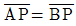
=2km,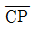
=3km 일때 P점의 최확값은?- 365.125m
- 365.113m
- 365.100m
- 366.086m
(정답률: 64%)
66. 그림과 같은 삼각망에서 CD의 방위는?
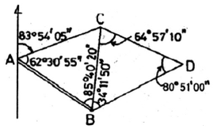
- S 12° 51' 50" E
- S 12° 11' 50" W
- S 23° 51' 10" E
- S 23° 45' 30" E
(정답률: 67%)
67. 각 측정기의 조정이 완전한 경우 성립조건이 아닌 것은?
- 시준선은 수평분도원과 직각이다.
- 시준선은 연직축과 직각을 이룬다.
- 수평축은 연직분도원과 직각이다.
- 연직축은 수평분도원과 직각이다.
(정답률: 53%)
68. 최소제곱법에 대한 설명으로 옳은 것은?
- 같은 정밀도로 측정된 측정값에서는 오차의 제곱의 합이 최대일 때 최확값을 얻을 수 있다.
- 최소제곱법을 이용하여 정오차를 제거한다.
- 관측값이 서로 다른 경중률을 가질 때에는 최소제곱법을 사용할 수 없다.
- 최소제곱법의 해법에는 관측방정식과 조건방정식이 있다.
(정답률: 19%)
69. 토탈스테이션의 기본적인 기능과 거리가 먼 것은?
- EDM이 갖고 있는 거리 측정 가능
- 디지털 데오도라이트가 갖고 있는 각 측정 기능
- 각과 거리 측정에 의한 좌표 계산 기능
- 디지털구적기가 갖고 있는 면적 측정 기능
(정답률: 75%)
70. 다음 중 삼각망의 정확도가 높은 순서대로 나열된 것은?
- 단열 삼각망 > 유심 삼각망 > 사변형 삼각망
- 사변형 삼각망 > 무신 삼각망 > 단열 삼각망
- 유심 삼각망 > 단열 삼각망 > 사변형 삼각망
- 사변형 삼각망 > 단열 삼각망 > 유심 감각망
(정답률: 57%)
71. 수준측량에 사용되는 용어에 대한 설명으로 옳은 것은?
- 전시는 전후의 측량을 연결할 때 사용한다.
- 후시는 기지의 측점에 세운 표척의 읽음값이다.
- 기계고는 지면에서부터 망원경 중심까지의 높이이다.
- 수준면은 각 측점에서 지오디드면과 직교하는 모든점을 잇는 곡면이다.
(정답률: 70%)
72. GPS 수신기의 검사방법으로 옳지 않은 것은?
- 검사는 국토지리정보원이 설치한 GPS수신기의 비교기선장에서 한다.
- 측정은 단독측위 방식으로 실시한다.
- GPS 위성의 최저관측 고도각은 15°이상으로 한다.
- 비교기선장의양측점에 GPS 수신기를 정치하고 측정한다.
(정답률: 66%)
73. 점 C와 D의 평면좌표를 구하기 위하여 기지 삼각점 A, B로부터 사변형삼각망에 의한 삼각측량을 실시하였다. 변조정에 앞서 각조정 실시에 필요한 최소한의 조건식이 아닌 것은?
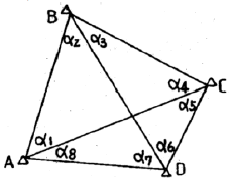
- α1+α2=α5+α6
- α1+α2+α7+α8=180°
- α3+α4=α7+α8
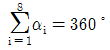
(정답률: 78%)
74. 우연 오차의 성질에 대한 설명으로 옳지 않은 것은?
- 큰 오차가 생길 확률은 작은 오차가 생길 확률보다 작다.
- 같은 크기의 정(+)오차와 부(-)오차의 발생확률은 같다.
- 우연오차는 부호와 크기가 규칙적으로 나타난다.
- 매우 큰 오차는 거의 발생하지 않는다.
(정답률: 60%)
75. 각측정기의 수평축이 연직축과 직교하지 않은 기계로 측정할 때의 오차소거법에 대한 설명으로 옳은 것은?
- 망원경의 정위 및 반위의 관측결과를 평균한다.
- 소거가 불가능하다.
- 눈금판을 재조정한다.
- 직교에 대한 편차를 구하여 더한다.
(정답률: 52%)
76. 정밀한 수준 측량에서 수준 표척의 전ㆍ후 거리를 되도록 같게 하는 이유와 거리가 먼 것은?
- 지구의 곡률로 인한 오차를 소거한다.
- 광선의 굴절로 인한 오차를 소거한다.
- 기계의 조정불량에 의한 오차를 소거한다.
- 과대오차를 소거하여 계산을 용이하게 하기 위해서이다.
(정답률: 72%)
77. 축척 1:25,000의 지형도에서 963m의 산정으로부터423m의 산밑까지의 거리가 95mm이었다. 이때 사면의 경사는 약 얼마이가?
- 1/7.4
- 1/6.4
- 1/5.4
- 1/4.4
(정답률: 65%)
78. 크래버스 측량에서 A, B, C점에 대하셔 위거(L)와경거(D)를 계산하여 LAB=80.0m, DAB=20.0m, LBC=-40.0m, DBC=30.0m의 결과를 얻었다. AC의 거리는? (단, LAB: AB측선의 위거, DAB:AB측선의경거)
- 61.454m
- 61.789m
- 62.073m
- 64.031m
(정답률: 27%)
79. 등고선에 대한 설명으로 틀린 것은?
- 등고선 간의 최단거리 방향은 최대 경사방향을 나타낸다.
- 높이가 다른 등고선은 절대로 서로 교차하지 않는다.
- 등고선이 도면 내에서 폐합하는 경우 등고선의 내부에는 산꼭대기 또는 분지가 있다.
- 등고선은 분수선과 직각으로 만나다.
(정답률: 67%)
80. 경중률(weight)에 대한 설명 중 틀린 것은?
- 관측값의 신뢰도를 나타낸다.
- 관측횟수에 반비례한다.
- 관측거리에 반비례한다.
- 평균제곱근오차의 제곱에 반비례한다.
(정답률: 65%)
5과목: 측량학
81. 국가지명위원회의 부위원장이 되는 자는?
- 국토지리정보원에서 지명업무를 담당하는 과장 또는 담당관
- 국토지리정보원장 및 국립해양조사원장
- 국토해양부차관
- 행정안전부차관
(정답률: 44%)
82. 공공측량성과의 심사에서 측량성과 심사수탁기관은 성과심사의 신청접수일로부터 통상적으로 며칠 이내에 심사결과를 통지하여야 하는가?
- 10일
- 20일
- 30일
- 60일
(정답률: 45%)
83. 공공측량의 실시공고에 포함되어야 할 사항이 아닌 것은?
- 측량의 종류
- 측량의 목적
- 측량의 규모
- 측량의 실시기간
(정답률: 57%)
84. 측량업의 종류에 해당되지 않는 것은?
- 지적측량업
- 지하시설물측량업
- 연안조사측량업
- 특수측량업
(정답률: 56%)
85. 1:5000 지형도 제작 시 바다에서의 수애선은 어느 시기의 수위를 기준으로 하는가?
- 측량당시의 수위
- 간조시의 수위
- 평균해수면의 수위
- 만조시의 수위
(정답률: 37%)
86. 지적도에 등록된 경계점의 정밀도를 높이기 위하여 작은 축척을 큰 축척으로 변경하여 등록하는 것을 무엇이라 하는가?
- 축척변경
- 등록전환
- 분할
- 축척재등록
(정답률: 63%)
87. 다음 중 가장 무거운 기준의 벌칙을 받는 자는?
- 입찰의 공정성을 해친 자
- 측량기준점표지를 파손한 자
- 측량업 등록을 하지 아니하고 측량업을 영위한 자
- 측량성과를 위조한 자
(정답률: 64%)
88. 측량업의 종류와 업무 내용이 잘못 짝이어진것은?
- 측지측량업 - 기본측량으로서 국가기준점의 측량 및 지형·지물에 대한 측량
- 항공촬영법 - 항공기를 이용한 측량용 공간 영상정보 등의 촬영·제작과 DB 구축
- 영상처리업 - 측량용 사진과 위성영상을 이용한 도화기상에서의 지형·지물의 측정 및 묘사와 그에 관련된 좌표측량, 영상판독 및 현지조사
- 수치지도제작업 - 지도(수치지도 포함) 제작을 위한 지리조사, 영상판독, 데이터의 입력·출력 및 편집, 지형공간정보체계의 구축
(정답률: 38%)
89. 다음 중 공공측량의 정의에 의해 "대통령령으로 정하는 측량" 의 대상이 없는 것은?
- 측량실시지역의 면적이 10제곱킬로미터인 기준점 측량, 지형측량 및 평면측량
- 측량노선의 길이가 5킬로미터인 기준점 측량
- 촬영지역의 면적이 5제곱킬로미터인 측량용 사진의 촬영
- 공공의 이해에 특히 관계가 있다고 인정되는 사설철도의 부설, 간척 및 매립사업 등에 수반되는 측량
(정답률: 69%)
90. 측량기기의 성능검사 대상과 주기로 옳은 것은?
- 레벨 및 거리 측정기 : 4년
- GPS 수신기 : 3년
- 토털 스테이션 : 2년
- 금속관로탐지기 : 1년
(정답률: 45%)
91. 그림과 같은 평면도의 받침판 표지를 갖고 있는 국가기준점은?
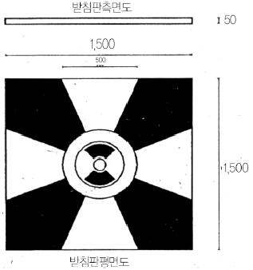
- 위성기준점
- 통합기준점
- 삼각점
- 수준점
(정답률: 65%)
92. 공공측량 작업계획서에 포함되어야 할 사항과 거리가 먼 것은? (단, 그 밖에 작업에 필요한 사항은 제외)
- 공공측량의 투입 인력 명단
- 공공측량의 위치 및 사업량
- 공공측량의 사업명
- 사용할 측량기기의 종류 및 성능
(정답률: 69%)
93. 지도도식규칙에 대한 설명으로 옳지 않은 것은?
- 측량성과를 이용하여 간행하는 지도의 도식에 관한 기준을 정한 것이다.
- 기본측량 및 공공측량의 성과로서 지도를 간행하는 경우에 적용하다.
- 기본측량 및 공공측량 성과를 간접적으로 이용하는 지도간행물에는 적용하지 않는다.
- 군사용의 지도와 그 간행물에 대하여는 적용하지 않을 수 있다.
(정답률: 62%)
94. 측량의 기준에 대한 설명으로 틀린 것은?
- 측량의 원점은 대한민국 경위도원점 및 수준원점으로 한다.
- 위치는 세계측지계에 따라 측정한 지리학적 경위도와 높이로 표시한다.
- 해안선은 해수면이 약최저저조면에 이르렀을 때의 육지와 해수면과의 경계로 표시한다.
- 세계측지계, 측량의 원점 값의 결정 및 직각 좌표의 기준 등에 필요한 사항은 대통령령으로 정한다.
(정답률: 65%)
95. 다음 중 용어에 대한 정의로 옳지 않은 것은?
- 기본측량이란 국토개발을 위한 기초 자료가 되는 공간정보를 제공하기 위하여 대통령이 실시하는 측량을 말한다.
- 공공측량이란 국가, 지방자치단체, 그 밖에 대통령령으로 정하는 기관이 관계 법령에 따른 사업 등을 시행하기 위하여 기본측량을 기초로 실시하는 측량을 말한다.
- 지적측량이란 토지를 지적공부에 등록하거나 지적공부에 등록된 경계점을 지상에 복원하기 위해 시행하는 측량을 말한다.
- 수로측량이란 해양의 수심·지구자기·중력·지형·지질의 측량과 해안선 및 이에 딸린 토지의 측량을 말한다.
(정답률: 59%)
96. 측량의 기준인 세계측지계의 기준 요건으로 틀린 것은?
- 장반경 : 6,378,137m
- 편평률 : 1/298.257222101
- 회전타원체의 중심이 지구의 질량중심과 일치할것
- 회전타원체의 장축이 지구의 자전축과 일치 할 것
(정답률: 70%)
97. 공공측량시행자가 공공측량 작업계획서를 제출해야 하는 시기에 대한 기준은?
- 공공측량을 하기 10일 전
- 공공측량을 하기 20일 전
- 공공측량을 하기 30일 전
- 공공측량을 하기 40일 전
(정답률: 37%)
98. 기본측량의 실시 공고에 포함되어야 하는 사항으로 옳은 것은?
- 측량의 정확도
- 측량성과의 보관 장소
- 설치한 측량기준점의 수
- 측량의 실시지역
(정답률: 45%)
99. 기본측량성과 및 기본측량기록을 사용한 지도나 그 밖에 필요한 간행물(지도 등) 또는 측량용 사진을 국외로 반출하고자 할 경우 원칙적으로 누구의 허가를 받아야 하는가?
- 대통령
- 행정안전부장관
- 국토해양부장관
- 시·도지사
(정답률: 74%)
100. 측량·수로조사및지적에관한법률에서 정하는 측량(수로조사 제외)을 할 수 있는 기술자에 해당되지 않는 자는?
- 측량 및 지형공간정보 기사
- 지도제작기능사
- 도화기능사
- 고등학교 졸업자로 2년의 측량업무를 수행 한 자
(정답률: 62%)